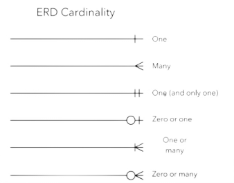

BACK
Entiteet - Definieeritavad asjad, mille kohta saab salvestada andmeid. Näited: klient, üliõpilane, auto või toode.
Entiteeditüüp - Grupp definieeritavaid asju, nagu üliõpilased või sportlased. Entiteet on siis konkreetne üksus selles grupis.
Entiteedihulk - Sama mis entiteeditüüp, kuid määratletud kindlal ajahetkel.
Suhted - Kuidas entiteedid üksteisega toimivad või on seotud. Näiteks: üliõpilane registreerub kursusele.
Atribuudid - Entiteedi omadused või tunnused. Näiteks: nimi, vanus, telefoninumber.
Kardinaalsus - Määratleb kahe entiteedi või entiteedihulga vahelise suhte numbriliselt. Näiteks: üks-ühele, üks-palju, palju-palju.

Kardinaalsuse vaated ja piirangud - Kardinaalsust saab kujutada vaatesid look-across või same-side, sõltuvalt sellest,
kus sümbolid on kujutatud. Minimaalsed või maksimaalsed arvud, mis kehtivad suhte kohta.